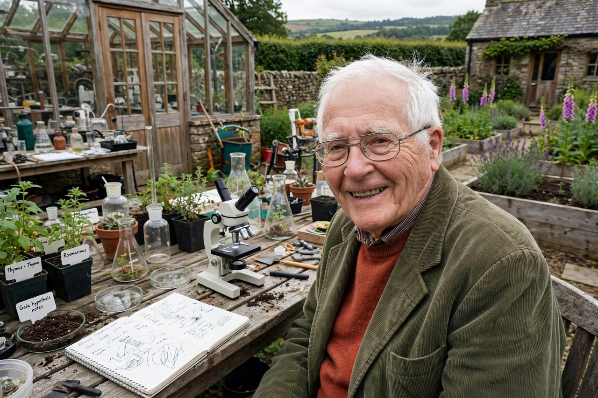

James Lovelock
| James Lovelock | |
|---|---|
| Born | 26 July 1919, Letchworth, England |
| Died | 26 July 2022, Abbotsbury, England |
| Field | Chemistry, Earth system science |
| Known for | Gaia hypothesis; electron capture detector |

James Ephraim Lovelock (26 July 1919 – 26 July 2022) was an English chemist, inventor and environmental thinker who proposed the Gaia hypothesis, the idea that life and its material environment form a coupled, self-regulating system. He died on his 103rd birthday.
An independent scientist for most of his career, Lovelock worked from a home laboratory in the West of England, inventing instruments of legendary sensitivity and consulting for NASA, intelligence agencies and industry alike.
Inventions and Gaia
Lovelock's electron capture detector (1957) could sense trace gases at parts-per-trillion levels; with it he was the first to show that CFCs had spread throughout the global atmosphere — measurements that fed the work leading to the ozone treaties — and to document pesticide residues far from where they were used. Hired by NASA to help design life-detection experiments for Mars, he reasoned that a living planet's atmosphere would betray itself by chemical disequilibrium, and Gaia was born.
His 1979 book Gaia: A New Look at Life on Earth made the idea famous; subsequent books grew more alarmed, with The Revenge of Gaia (2006) warning of a hot, hostile climate state, and Novacene (2019), written at 100, speculating on an age of intelligent machines.
Views and legacy
Lovelock was never a comfortable member of any camp: he supported nuclear power, opposed wind farms near his home, criticised green orthodoxy, and was honoured by many of the same environmentalists he provoked. The Amsterdam Declaration of 2001, in which Earth scientists affirmed that the Earth system behaves as a single self-regulating system, marked Gaia's partial absorption into the mainstream.
See also: Gaia hypothesis · Biosphere · Climate change · Ozone depletion